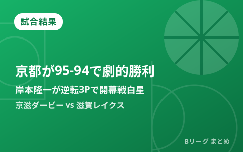

京都が滋賀に95-94の劇的勝利 新加入・岸本隆一が残り3.6秒の逆転3Pで開幕戦を白星発進

9月25日、にっしんでんきアリーナ京都で行われたB.PREMIER開幕週、京都ハンナリーズ対滋賀レイクスの「京滋ダービー」は、まさかの大接戦となりました。第4クオーター残り3.6秒、92-94とビハインドを負っていた京都で、この夏に琉球ゴールデンキングスから加入した岸本隆一が左サイドから逆転の3ポイントシュートを沈め、95-94で劇的勝利。新天地でのデビュー戦を白星で飾りました。同日行われた開幕週の他カードの結果も合わせて振り返ります。
残り3.6秒、新加入・岸本隆一が値千金の逆転3P
試合は最後までもつれる展開となり、第4クオーター終盤に滋賀が94-92とリードを奪う場面がありました。しかし京都は残り3.6秒からのオフェンスで岸本隆一にボールを託し、岸本が左サイドでパスを受けると迷わず3ポイントシュートを放ち、ブザー間際にリングに吸い込まれる劇的な逆転弾に。試合後、岸本は「やっと一員になれた」と、夏に加入したばかりのチームでの初勝利に喜びを語ったと報じられています。
岸本は13得点、京都が新カテゴリー初戦を白星スタート
決勝シュートを沈めた岸本はこの日25分33秒の出場で13得点を記録し、加入初戦から存在感を示しました。京都にとっては新設カテゴリー「B.PREMIER」西地区での関西ダービーを制する、幸先の良いスタートとなりました。
| 選手 | チーム | スタッツ |
|---|---|---|
| 岸本隆一（夏に琉球から加入） | 京都 | 13得点（25分33秒出場、決勝の逆転3P含む） |
開幕週の他カードは、広島が佐賀に快勝、島根が長崎に連勝
同じ9月25日、SAGAアリーナで行われた佐賀バルーナーズ対広島ドラゴンフライズは、広島が87-100で快勝し開幕戦を白星スタート。佐賀は開幕黒星となりました。また、前シーズン王者・長崎ヴェルカとの開幕週2連戦を戦った島根スサノオマジックは、23日の第1戦を89-64の圧勝で飾った後、25日の第2戦も78-85で競り勝ち、開幕2連勝を達成。デクスター・デニスが2戦連続で27得点をマークしたほか、岡田侑大が3ポイントシュート6本を含む26得点、中村太地も14得点と好調を維持しています。
Q. 「京滋ダービー」とは？
A. 京都府と滋賀県は隣接しており、京都ハンナリーズと滋賀レイクスの対戦は地理的な近さから「京滋ダービー」と呼ばれています。今回の一戦は新リーグ「B.PREMIER」西地区での初対戦となり、1点差の大接戦になりました。
出典：スポーツ報知「京都ハンナリーズ、第４Ｑ終了間際の逆転劇で白星発進 新加入の岸本隆一が決めた 滋賀レイクスとの関西対決制す」／サンケイスポーツ「京都・岸本隆一、残り3.6秒から逆転3点シュート」／佐賀新聞「佐賀バルーナーズ、開幕戦は黒星 広島ドラゴンフライズに87－100」／TSKさんいん中央テレビ「島根スサノオマジックが開幕2連勝！昨季王者の長崎をアウェイで撃破」ほか
https://news.yahoo.co.jp/articles/2b6c89f12abefcd32cc76fcd22bd79621b41a547
https://news.yahoo.co.jp/articles/c930a6de97a6544592233d6c70e27c7885770151
https://www.saga-s.co.jp/articles/-/1798507
https://news.yahoo.co.jp/articles/4278f0c594e9d0b40f2559202695df1e84ac64d2
https://www.bleague.jp/game_detail/?ScheduleKey=506383&tab=2